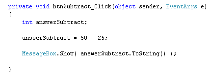
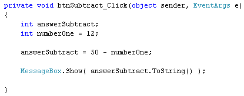

Subtraction in C# .NET
<< Continues from the previous lesson
Subtraction is fairly straightforward in C#. To subtract one number from another, you use the minus symbol ( - ).
Add another button to your form. Set the following properties for it in the Properties Window:
Name: btnSubtract
Size: 100, 30>
Text: Subtract
Double click the button to get at the code. Add the following three lines of code:
int answerSubtract;
answerSubtract = 50 - 25;
MessageBox.Show( answerSubtract.ToString() );
Your coding window will then look like this:

So we've set up an integer variable called answerSubtract. On the second line, we're using the minus symbol to subtract 25 from 50. When C# works out the answer to 50 - 25, it will place the answer to the left of the equals sign, in the answerSubtract variable. On the final line, we're displaying the answer in a message box.
Run your code, and make sure it works. The answer you should see in the message box is, of course, 25. Stop your programme and return to the coding window. Now change the 25 to 25.5.
answerSubtract = 50 - 25.5;
Try to run your programme and you'll get the blue wiggly line, meaning there's an error in your code. The reason is the same as for addition: we're trying to place a float number into an integer variable (the answer will be 24.5, this time). Just because the math symbol has changed doesn't mean we can disobey the C# rules!
Change it back to 25, and the code will run fine.
As with addition, you can subtract more than one number. Change your line to this:
answerSubtract = 50 - 25 - 10 - 2;
When you run your programme, you should see 13 in your message box, the answer to the subtraction.
You can also use variable names in your subtraction. Add the following integer variable to your code:
int numberOne = 12;
Then change the second line to this:
answerSubtract = 50 - numberOne;
Here's what your coding window should look like:

What we're doing here is setting up an integer variable called numberOne. We're then placing a value of 12 inside of the variable - all on the same line. For the second line, we're subtracting whatever is in the variable called numberOne from 50.
Run you programme and click your button. You should see an answer of 38 in your message box.
Exercise A
Set up another variable. Call it numberTwo. Place a value of 4 inside
of this new variable. Subtract from 50 the value in numberOne and the
value in numberTwo. When you run your code, the answer you get in the
message box should be 34.
In the next part, we'll use addition and subtraction.